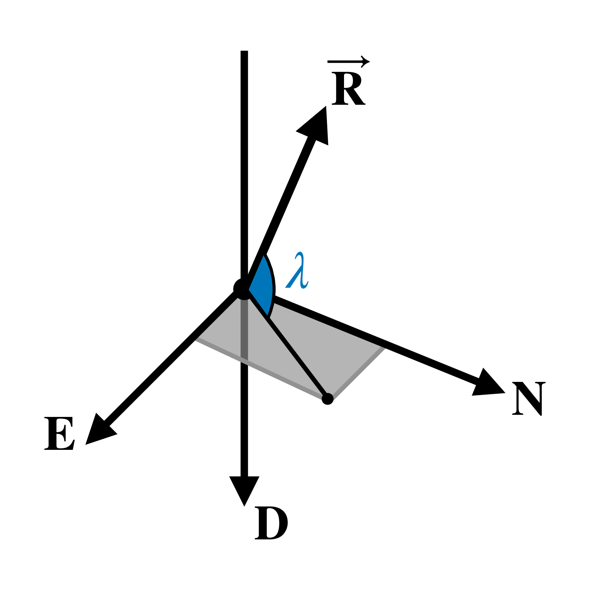

ISS Observation Instants
In this tutorial, we will compute the instants in which we can theoretically observe the ISS from our location. Actually, we will compute the moments an observer on the Earth's surface has a direct line of sight to the ISS.
Theory
We can verify if we have a line of sight to an object by computing the elevation $\lambda$ of its position vector represented in a local reference frame. Let's use the NED (North-East-Down) reference: its X axis points toward the North, its Y axis points toward the East, and its Z axis points toward the Earth's center, as shown in the following figure.

If the angle $\lambda$ is greater than zero, we can theoretically observe the object we are analyzing because it is above the horizon at the desired location. We can compute this angle using:
\[\begin{equation*} \lambda = \arctan\left(-\frac{R_{NED,z}}{\sqrt{R_{NED,x}^2 + R_{NED,y}^2}}\right)~, \end{equation*}\]
where $R_{NED,i}$ is the $i$-axis component of the object position vector $\vec{R}$ represented in the NED reference frame.
Algorithm
We need to perform the following tasks to check when ISS enters our field of view:
- Obtain the ISS position during the desired period;
- Convert the position vector to the NED reference frame;
- Obtain the elevation for each instant; and
- Check when the elevation is greater than zero.
Code
Before starting, let's load all the packages in the SatelliteToolbox.jl ecosystem:
julia> using SatelliteToolboxWe first need to obtain the mean elements of the ISS to propagate its orbit. Celestrak distributes the general perturbation (GP) data of the cataloged objects using the Orbit Mean-Elements Message (OMM) format, which is defined in the CCSDS Orbit Data Messages (ODM) standard. The package SatelliteToolboxOrbitDataMessages.jl provides a fetcher to download those messages. The following code creates the fetcher and downloads the latest available OMM of the ISS:
julia> f = create_omm_fetcher(CelestrakOmmFetcher)
CelestrakOmmFetcher: https://celestrak.org/NORAD/elements/gp.php
julia> omms = fetch_omms(f; satellite_name = "ISS (ZARYA)")
1-element Vector{OrbitMeanElementsMessage}:
OMM: ISS (ZARYA) [1998-067A] (Epoch = 2026-08-09T11:20:13.861824)
julia> iss_omm = omms[1]
OrbitMeanElementsMessage:
Header
Originator :
Body
└─ Segment
├─ Metadata
│ Object Name : ISS (ZARYA)
│ Object ID : 1998-067A
│ Center Name : EARTH
│ Ref. Frame : TEME
│ Time System : UTC
│ Mean Element Theory : SGP4
└─ Data
├─ Mean Keplerian Elements
│ Epoch : 2026-08-09T11:20:13.861824
│ Mean Motion : 15.49394423 rev/day
│ Eccentricity : 0.0007357
│ Inclination : 51.6322°
│ RA of Asc. Node : 36.3838°
│ Arg. of Pericenter : 29.0181°
│ Mean Anomaly : 331.1215°
└─ TLE Related Parameters
Ephemeris Type : 0
Classification Type : U
NORAD Cat ID : 25544
Element Set Number : 999
Rev at Epoch : 58001
Bstar : 8.7174e-5
∂(Mean Motion)/∂t : 4.421e-5 rev/day²
∂²(Mean Motion)/∂t² : 0.0 rev/day³The mean elements in the fetched OMM are related to the SGP4 theory, as we can see in the field Mean Element Theory. Hence, we must use the SGP4/SDP4 algorithm to propagate the ISS orbit. This propagator is initialized using a TLE, and we can convert the OMM to it using the function convert:
julia> iss_tle = convert(TLE, iss_omm)
TLE:
Name : ISS (ZARYA)
Satellite number : 25544
International designator : 98067A
Epoch (Year / Day) : 26 / 221.47238266 (2026-08-09T11:20:13.862)
Element set number : 999
Eccentricity : 0.00073570
Inclination : 51.63220000 deg
RAAN : 36.38380000 deg
Argument of perigee : 29.01810000 deg
Mean anomaly : 331.12150000 deg
Mean motion (n) : 15.49394423 revs / day
Revolution number : 58001
B* : 8.7174e-05 1 / er
ṅ / 2 : 4.421e-05 rev / day²
n̈ / 6 : 0 rev / day³Now, we can initialize the SGP4/SDP4 propagator as follows:
julia> orbp = Propagators.init(Val(:SGP4), iss_tle)
OrbitPropagatorSgp4{Float64, Float64}:
Propagator name : SGP4 Orbit Propagator
Propagator epoch : 2026-08-09T11:20:13.862
Last propagation : 2026-08-09T11:20:13.862Let's say we want to check when the ISS will be inside our field of view within one day from this OMM epoch. The following code propagates the mean elements for one day using a step of one second:
julia> ret = Propagators.propagate!.(orbp, 0:1:86400)
86401-element Vector{Tuple{StaticArraysCore.SVector{3, Float64}, StaticArraysCore.SVector{3, Float64}}}:
([5.468768324422245e6, 4.0295595004779864e6, 22.35656936455697], [-2828.846105092686, 3823.457263702539, 6012.017080056535])
([5.465935992393167e6, 4.0333803899831795e6, 6034.361341059221], [-2835.8084008800856, 3818.323466411273, 6012.013214222088])
([5.463096699847507e6, 4.037196143261074e6, 12046.358405488236], [-2842.767114054207, 3813.1847856499407, 6012.001670588928])
⋮
([-5.734090462719248e6, -3.654916824133614e6, -162139.0214012769], [2666.634683445473, -3934.751232174644, -6001.663032767319])
([-5.731420201838812e6, -3.6588492491559116e6, -168140.57485467652], [2673.9065676262103, -3930.1125486813057, -6001.452955618615])Each element in the returned array is a tuple with two vectors. The first is the satellite position [m], and the second is the velocity [m / s]. We only need to check its position. Thus, let's obtain this information for each instant:
julia> vr_teme = first.(ret)
86401-element Vector{StaticArraysCore.SVector{3, Float64}}:
[5.468768324422245e6, 4.0295595004779864e6, 22.35656936455697]
[5.465935992393167e6, 4.0333803899831795e6, 6034.361341059221]
[5.463096699847507e6, 4.037196143261074e6, 12046.358405488236]
⋮
[-5.734090462719248e6, -3.654916824133614e6, -162139.0214012769]
[-5.731420201838812e6, -3.6588492491559116e6, -168140.57485467652]This concludes the first step of the algorithm.
The information obtained by the SGP4 is represented in the True-Equator, Mean-Equinox (TEME) reference frame, which is a quasi-inertial frame. Now, we need to convert it to a frame fixed on Earth since we need to compute the elevation angle in a specific position at Earth's surface. We can do this using the function r_eci_to_ecef. It returns a matrix that rotates an Earth-centered inertial (ECI) frame to an Earth-centered, Earth-fixed (ECEF) frame. For our simple example, we will use the PEF (pseudo-Earth fixed) frame as the ECEF. All the vectors returned by the propagator can be converted as follows:
julia> vr_pef = r_eci_to_ecef.(TEME(), PEF(), Propagators.epoch(orbp) .+ ((0:1:86400) ./ 86400)) .* vr_teme
86401-element Vector{StaticArraysCore.SVector{3, Float64}}:
[-194731.00204485405, -6.79020298598938e6, 22.35656936455697]
[-190471.55402402583, -6.790311791836043e6, 6034.361341059221]
[-186211.87978995888, -6.790412607999009e6, 12046.358405488236]
⋮
[769132.5300043474, 6.756230130573698e6, -162139.0214012769]
[764888.7653951888, 6.756574615488757e6, -168140.57485467652]The code Propagators.epoch(orbp) .+ ((0:1:86400) ./ 86400) obtains the Julian Day [UTC] of each propagation instant.
We can now convert the ECEF vectors to the NED frame using the function ecef_to_ned. However, we must input the geodetic location we are analyzing. Here, we will use the location of the city of São José dos Campos, SP, Brazil:
- Latitude: 23.1791 S.
- Longitude: 45.8872 W.
- Altitude: 593 m.
julia> vr_ned = ecef_to_ned.(vr_pef, -23.1791 |> deg2rad, -45.8872 |> deg2rad, 593; translate = true)
86401-element Vector{StaticArraysCore.SVector{3, Float64}}:
[1.8501090008805105e6, -4.866289565779151e6, 2.0183969472293633e6]
[1.8568334581728124e6, -4.863307143262354e6, 2.0179659395906986e6]
[1.8635557124885947e6, -4.860318996926273e6, 2.0175400574827082e6]
⋮
[-1.8630798143715921e6, 5.25504550236853e6, 1.0278662358401524e7]
[-1.8698569695073399e6, 5.2522383899692455e6, 1.0279242995992837e7]This concludes the second step of the algorithm.
We must set the keyword translate to true because we do not want only to rotate the reference frame. We also wish the frame origin for the returned vectors to be translated from the Earth's center to the city location.
The elevation in the third step can be easily computed using the presented formula:
julia> vλ = map(v -> atand(-v[3], sqrt(v[1]^2 + v[2]^2)), vr_ned)
86401-element Vector{Float64}:
-21.191163866411994
-21.188497280309722
-21.185863544167628
⋮
-61.52293043348618
-61.52590774915887Finally, we need to find the indices related to elevations greater than zero:
julia> ids = findall(>=(0), vλ)
2678-element Vector{Int64}:
30727
30728
30729
⋮
72375
72376Those are the instants that we will have a direct line of sight to the ISS. We can discover the related time using:
julia> using Dates
julia> getindex(Propagators.epoch(orbp) .+ ((0:1:86400) ./ 86400) .|> julian2datetime, ids)
2678-element Vector{DateTime}:
2026-08-09T19:52:19.862
2026-08-09T19:52:20.862
2026-08-09T19:52:21.862
⋮
2026-08-10T07:26:27.862
2026-08-10T07:26:28.862